Favourites
Prerequisites
Zen UV has a lot of different operators and tools that are located in different panels. And we decided to make Favorites to collect frequently used operators in one place. Also there is an option to build in Blender native panels: such as UV Maps or Attributes.
Tip
Watch the video explaining how to organize Favourites.
Favourites Interface Panel
All favourties items are displayed in interface panel which could be placed depending on display modes
Panel
| 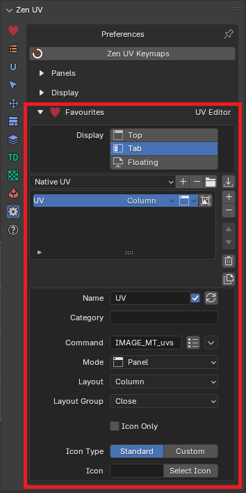 |  |
|---|---|
| UV Editor | View 3D |
{kind=link}
Display Modes
You can choose a combination of one or several display favourites panel options.
 |
|---|
| Favourites Display Modes |
Top Display Mode
Favourites will be placed at the top of N-Panel.
| 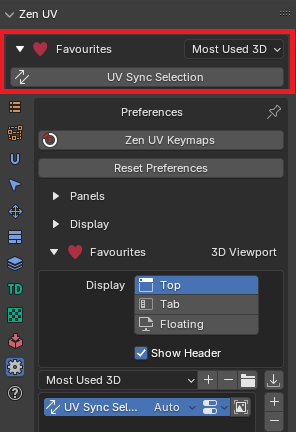 |
|---|
| Top display mode |
{kind=link}
Show Header
If Show Header option in top mode is unset than favourites header is not showing
 |
|---|
| Show header in top mode |
Tab Display Mode
Favourites will be represented as the tab page of N-Panel.
| 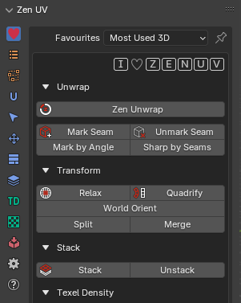 |
|---|
| Tab display mode |
{kind=link}
Float Display Mode
Favourites will be represented as the separate floating panel.
| 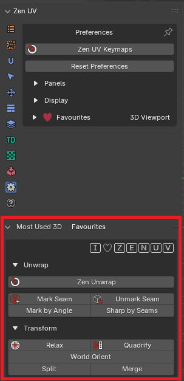 |
|---|
| Float display mode |
{kind=link}
Favourite Items List View
This control is used for managing lists of favourite items. In addition to the main list, there is a Filtering panel on the bottom (hidden by default) and modification buttons on the right.
 |
|---|
| List View |
Select
To select an item, click LMB on it.
Rename
By double-clicking on an item, you can edit its name via a text field. This can also be achieved by clicking it with Ctrl-LMB.
Resize
The list view can be resized to show more or fewer items. Hover the mouse over the handle ::::, then click and drag to expand or shrink the list.
Filter
Detailed information about filter is written in general list view description
Add +
Adds a new item.
Remove -
Removes the selected item.
Move (up/down arrow icon)
Moves the selected item up/down one position.
Delete All
Deletes all itemsms in the list
Duplicate
Duplicates item with copying all its properties.
Favourite Item
Is used to define UI element in favourites panel.
 |
|---|
| Favourite item and the corresponding UI element |
Name
Is used to display text in UI and is an identifier in the list.
Display Name Option
You can disable name by unchecking tickmark at the right corner in the name property field.
 |
 |
|---|---|
| 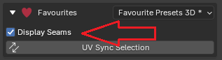 |  |
| Display name enabled | Display name disabled |
{kind=link}
Category
If you want to group items in collapsible panel, you can mark them with the same category and they automatically will be groupped.
| 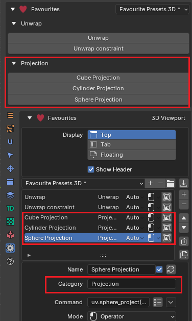 |
|---|
| Category example |
{kind=link}
Command and Mode
These two options depends on each other and are the main instrument to draw favourite item in the UI.
Mode
Operator
Displays an operator button in UI
 |
|---|
| Example of embedded Zen Unwrap operator |
Command
| 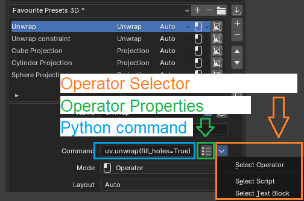 |
|---|
| Command interface in Operator mode |
{kind=link}
Python Command - is a text field where operator identifier or operator identifier with properties (optionally) should be set
| Command Example | Description |
|---|---|
| uv.unwrap | UV Unwrap with last context properties |
| uv.unwrap(fill_holes=True) | UV Unwrap with enable always ‘Fill Holes’ property |
Operator Properties - is a popup window to edit operator properties without necesserity to write them manually
| 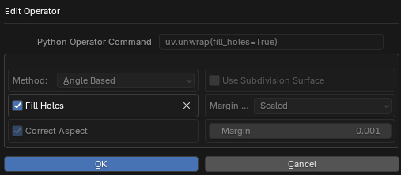 |
|---|
| Operator properties editor |
{kind=link}
-
Operator Selector - wizzard to define operator identifier in different ways
- Select Operator - Select operator which will be added to the favourites

Select operator from list of available operators - Select Text Block - Select user text datablock which will be loaded and executed when operator button will be clicked
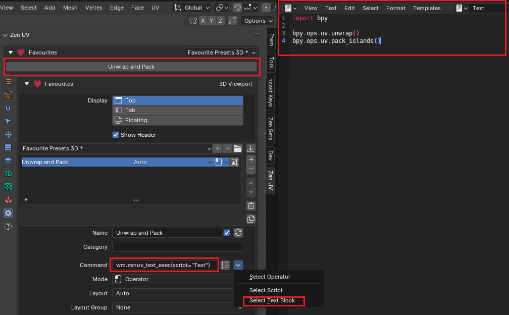 Example of executing Text data-block - Select Script - Select user script which will be loaded and executed when operator button will be clicked. It works in the same way as Select Text procedure with the only difference that code will be loaded from script.
{kind=link}
Panel
Displays a panel in UI
| 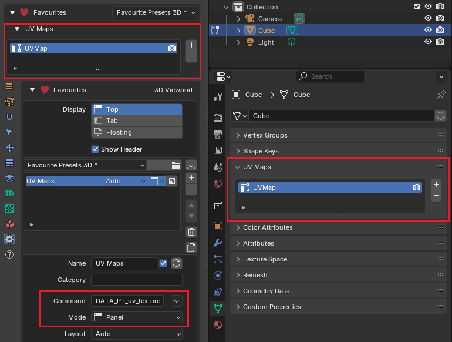 |
|---|
| Example of Blender UV Maps panel embedded |
{kind=link}
Command
Python Command - must be a valid python panel or menu identifier
| Command Example | Description |
|---|---|
| DATA_PT_uv_texture | UV Maps Panel |
| VIEW3D_MT_uv_map | UV Mapping Menu |
- Command Menu - popup menu where a panel or menu could be selected from the list
 |
|---|
| Command Menu in 3D Viewport context |
Property
Displays a property field in UI
 |
|---|
| Example of UV Sync Selection and Auto Texture Space properties embedded |
Command
Python Command - must be a valid context variable that is available through Python API
| Command Example | Description | Preview |
|---|---|---|
| scene.tool_settings.use_uv_select_sync | UV Sync Selection |  |
| active_object.data.use_auto_texspace | Auto Texture Space |  |
Label
Displays a text string, icon or one of them in UI.
| 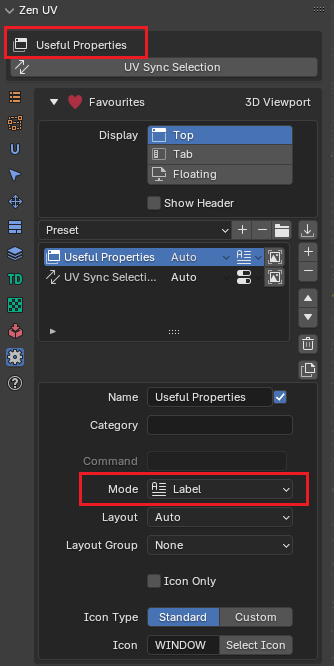 |
|---|
| Label with icon |
{kind=link}
Command
Is not used in this mode.
Script
Displays a UI block defined as python script. This mode is necessary when you would like to display difficult UI elements that are avilable through addon Python API functions
| Embedded Texel Density Ranges | Native Texel Density Ranges |
|---|---|
| 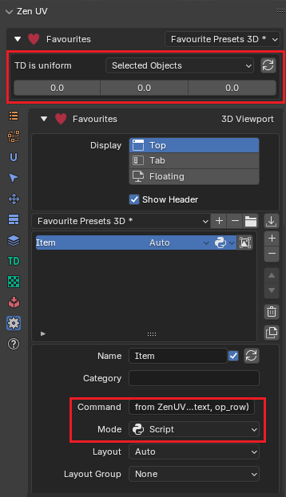 | 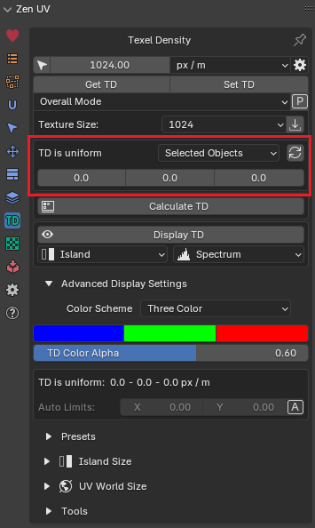 |
{kind=link}
{kind=link}
Command
Python Command - must be a valid Python API script line that can draw UI element in the current UILayout.
| Example | Zen UV Texel Density Ranges |
|---|---|
| Command | from ZenUV.ops.texel_density.td_ui import draw_td_ranges; draw_td_ranges(context, op_row) |
| Preview | 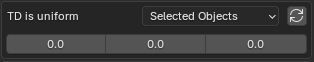 |
{kind=link}
Context variables
The context members available depend on the area of Blender which is currently being accessed.
Warning
All context values are read-only. Do not change them! Just use for UI display purposes.
-
context - current windowmanager and data context
TYPE:
bpy.types.Context -
layout - current Favourites Panel UI layout
TYPE:
bpy.types.UILayout -
op_row - current Favoutite Item UI layout
TYPE:
bpy.types.UILayout -
p_item - current Favoutite Item preferences (mode, name, etc.)
TYPE:
ZUV_FavItem -
addon_prefs - Zen UV preferences class
TYPE:
ZUV_AddonPreferences
Note
We understand that this may look very difficult so feel free to contact with us in our Discord channel. We will be very glad to help you!
Layout
Defines how favourite UI items will be placed in the favourite UI panel organizing items in sub-layouts.
-
Row - starts a sub-layout where items are placed next to each other in a row.

Projection operators placed in a row -
Column - starts a sub-layout where items are placed under each other in a column.
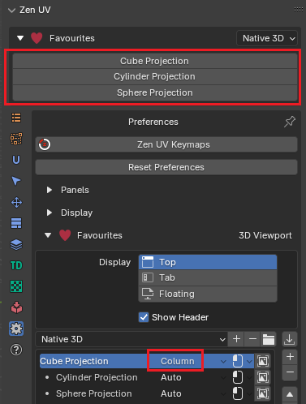 Projection operators placed in a column -
Flow Grid - starts a sub-layout where items are placed in a flow grid depending on panel width.
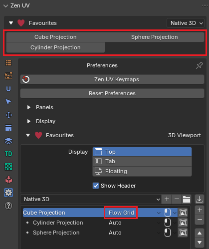 Projection operators placed in a flow grid -
Auto - follows the previously created sub-layout. If sub-layout was not previously defined than Flow Grid is set by default.
{kind=link}
{kind=link}
Note
Every sub-layout type except Auto inserts a separator before. If you want to skip separators creation group items with Layout Group property.
Layout Group
Option to skip creation of separators betweeen sub-layouts.
| 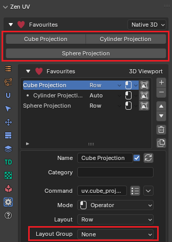 | 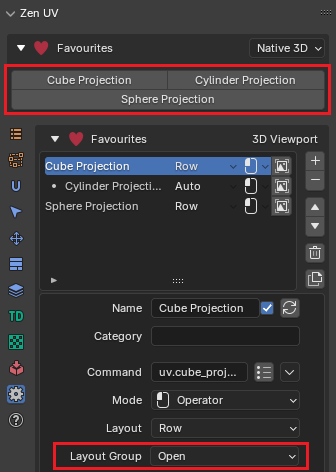 |
|---|---|
| None | Open |
{kind=link}
{kind=link}
- None - Does not change anything in current sub-layout.
- Open - Opens active sub-layout, where all elements will be placed without separators.
- Close - Closes sub-layout without separators.
Icon
Adds an icon to the current favourtie item element in UI.
| 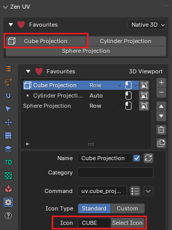 |
|---|
| Standard Blender Icon |
{kind=link}
Icon Type
Defines type of an icon that will be placed in UI.
-
Standard - Standard Blender icon.
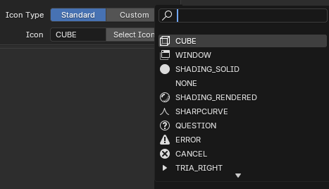 Standard Blender Icon Selector -
Custom - On of the ZenUV icons that are shipped with the addon.
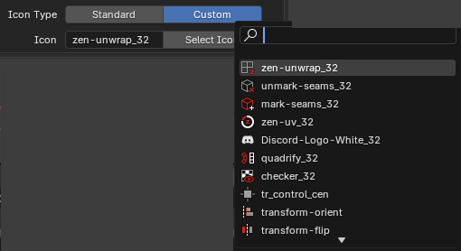 Custom Zen UV Icon Selector
{kind=link}
{kind=link}
Icon Only
If option is set then only icon will be shown in favourite item UI element.
| 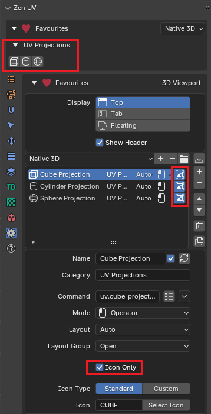 |
|---|
| UV Projection Operators |
{kind=link}